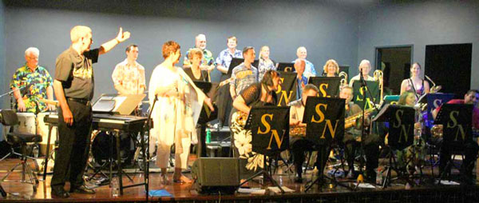
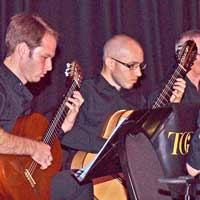
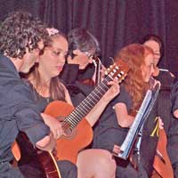

Are you new to Townsville?
Townsville has a population of about 200,000 and is growing at about 1 suburb per year, so there is a lot of musical activity. All private schools and most government schools have music teachers. The larger private schools are Townsville Grammar, the Cathedral School and Ryan Catholic College. The larger public high schools are Kirwan and Pimlico.

Townsville Community Music Centre is a not-for-profit, incorporated organisation serving musicians and their audience in North Queensland. The Music Centre's role includes facilitation, presentation and promotion of events, functions, education, workshops, concerts, festivals in Townsville, and surrounding centres.
It is located in Townsville, North Queensland, Australia, it promotes local artists and presents performances by inter- and intra-state and international artists.
It is involved in the instigation of projects based on cross collaboration with other artistic disciplines, and it promotes the work of North Queensland musicians outside the region, organising tours and promoting their work.
For more information about Townsville is available at - Click here
Contact
If you are interested please contact 7 4724 2086 or 0402 255 182 | Email us
Music Teachers Association of Qld is a good source of information for local music teachers.

The Townsville Branch contact is the Secretary "Ms Margery Jorgensen"
Contact: 07 47790382
Email: mjo11750@bigpond.net.au
Another active teachers’ organisation is the Kodaly Music Education Institute of Australia - www.kodaly.org.au
 Information on their Townsville Chapter can also be found at -
http://webapps.townsville.qld.gov.au/CommunityDirectory/Organisation/OrganisationDetails/1185
Some local businesses also employ or assist music teachers. Try also these -
heather@thekeyboardshop.com.au
artiesmusiconline.com.au
Busking is permitted at several public spaces around the city with a Buskers Permit from the city council -
phone 4727 9680.
There is no age limit, but buskers 16 and under will need to be accompanied by a parent/guardian.
Sponsors
 Townsville City Council
Townsville City Council
The Council's Partnerships and Sponsorships scheme provides vital core funding which enables us to maintain the administrative base for all our other activities, and also provides the premises which house our office space.
The Council also assists with the performance venues for our concerts and workshops.

 Queensland Government
Queensland Government
The Gambling Community Benefit Fund has assisted us to obtain office equipment and sound and lighting equipment for our productions.